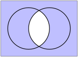

Chapter 1 Sets
Exercises Practice Problems
1. Making Sets From Other Sets.
Let \(A= \{ x \mid 1 < x < 3 \}\text{,}\) \(B = \{ x \mid 5 \leq x \leq 7 \}\) and \(C= \{ x \mid 2 < x < 6 \}\text{,}\) where \(x\) represents a real number. Write the following sets in "set builder" notation.
2. Element, Subset or Neither?
Mark each of the following statements as true or false
-
Let \(A = \{ 1, \{ 1 \} \}\text{.}\)
-
Let \(B = \{ 1, 2, 3 \}\)
-
\(C = \{ \{1,2\}, \{ \emptyset \} \}\)
-
\(D = \{ \{1, 2 \}, \{ 3, 4, 5 \} \}\)
-
\(E = \{ \emptyset, \{ \emptyset \} , 0 \}\)
3. DeMorgan's Law.
Consider the following DeMorgan Law: \[ \overline{(A \cap B)} = \overline{A} \cup \overline{B}. \]
-
Prove this law using a Venn diagram
Both of your Venn diagrams will look like this:
 Prove this law using a carefully argued double inclusion proof. Solution.
First, we prove that if \(x \in \overline{(A \cap B)}\) then \(x \in \overline{A} \cup \overline{B}\text{.}\)
\begin{equation*} \begin{array}{rcl} x \in \overline{(A \cap B)} & \Rightarrow & \mbox{ NOT } ( x \in A \cap B) \\ & \Rightarrow & \mbox{ NOT } ( x \in A \mbox{ AND } x \in B) \\ & \Rightarrow & \mbox{ NOT } ( x \in A) \mbox{ OR } \mbox{NOT } ( x \in B) \\ & \Rightarrow & x \in \overline{A} \mbox{ OR } x \in \overline{B} \\ & \Rightarrow & x \in \overline{A} \cup \overline{B} \\ \end{array} \end{equation*}Let's talk about that third step, since this is a new idea. We know that the statement "\(x \in A\) AND \(x \in B\)" is FALSE. So (at least) one of these statements is FALSE. In other words, either \(x \notin A\) or \(x \notin B\text{.}\)
Next, we prove that if \(x \in \overline{A} \cup \overline{B}\) then \(x \in \overline{(A \cap B)}\text{.}\) If you look carefully, this is just the previous argument in reverse. (This happens for simpler problems.)
\begin{equation*} \begin{array}{rcl} x \in \overline{A} \cup \overline{B} & \Rightarrow & x \in \overline{A} \mbox{ OR } x \in \overline{B} \\ & \Rightarrow & \mbox{ NOT } ( x \in A) \mbox{ OR } \mbox{NOT } ( x \in B) \\ & \Rightarrow & \mbox{ NOT } ( x \in A \mbox{ AND } x \in B) \\ & \Rightarrow & \mbox{ NOT } ( x \in A \cap B) \\ & \Rightarrow & x \in \overline{(A \cap B)} \\ \end{array} \end{equation*}Let's talk about the third step in this case. We know that either \(x \notin A\) or \(x \notin B\text{.}\) Therefore is is NOT true that "\(x \in A\) and \(x \in B\) are both true".
4. Empty Sets All the Way Down.
Consider the following sequence of sets \[ \emptyset, \{ \emptyset \}, \Big\{ \emptyset, \{ \emptyset \} \Big\}, \bigg\{ \emptyset , \{ \emptyset \} , \Big\{ \emptyset, \{ \emptyset \} \Big\} \bigg\}. \]
What is the size of each of these sets? Solution.
In order, these set sizes are 0, 1, 2 and 3.
What is the next set in this series? Solution.
\[ \bigg\{ \emptyset, \{ \emptyset \}, \Big\{ \emptyset, \{ \emptyset \} \Big\}, \bigg\{ \emptyset , \{ \emptyset \} , \Big\{ \emptyset, \{ \emptyset \} \Big\} \bigg\} \bigg\} \] And here is the next one: \[ \bigg\{ \emptyset, \{ \emptyset \}, \Big\{ \emptyset, \{ \emptyset \} \Big\}, \bigg\{ \emptyset , \{ \emptyset \} , \Big\{ \emptyset, \{ \emptyset \} \Big\} \bigg\}, \bigg\{ \emptyset, \{ \emptyset \}, \Big\{ \emptyset, \{ \emptyset \} \Big\}, \bigg\{ \emptyset , \{ \emptyset \} , \Big\{ \emptyset, \{ \emptyset \} \Big\} \bigg\} \bigg\} \bigg\} \]
Dr.~Philomath says, "You can create the natural numbers from nothing." Explain why she is right. Solution.
If you think of an empty set as a "nothing" then she is right. (But it's really a something that has nothing inside it.)
We have constructed sets of sizes 0,1,2,3,4 and 5. We can keep going and get a set of size \(n \in \N\text{.}\) However, the elements are just sets of sets, and the ultimate sets are empty. All we have is a bunch of nested empty set.
5. The Barber Paradox.
Consider the following classic paradox: "The barber is a man in town who shaves all those (and only those) men in town who do not shave themselves. Who shaves the barber?"
Note that I've updated the classic phrasing so that it is actually a paradox. Also, let us assume that every man shaves (even if it's just to clean up his beard).
Explain the logical paradox of this description of the barber. Solution.
The barber is a man, and (1) he shaves all men who don't shave themselves and (2) he doesn't shave any man who shaves himself. So this is becomes an "if and only if" statement. This leads to the following:
The barber cannot shave himself because (by definition), he only shaves men who do not shave themselves.
However, if the barber does not shave himself, then he is one of the men shaved by the barber.
But the barber only shaves men who don't shave themselves. This brings us back where we started.
This loop continues forever without resolution.
This is an example of how self-referential statements can lead to paradoxes. So this sentence is problematic. A mathematician would say that a paradox is NOT a mathematical statement, because it is neither true nor false.
The classic formulation of the "barber paradox" is actually: "The barber shaves every man in town who does not shave themselves. Who shaves the barber?" There are multiple reasons why this statement is NOT a paradox. Can you find at least one? Solution.
Here are four reasons why this phrasing is NOT a paradox. The first three tackle implicit (and possibly incorrect) assumptions about the barber. The last reason actually shows that the reader has actually made a logical mistake!
The clearest way out is when the barber is not a man. The barber could be a woman or non-gender conforming. Ages ago, the word "barber" required that the person was male. But this is clearly not the case in our modern times. Therefore, we must update the "barber paradox" to explicitly state that the barber is man.
The second assumption is that the barber is a person who shaves. This assumption could be wrong, even if the barber is a man. (And there is nothing like a huge, unkept beard to inspire confidence in a barber's clients.)
The barber is a man in town. Hundreds of years ago, you had to live in the same town in which you worked. What would "in town" mean in our modern times, when people commute to work?
-
But let's assume that the barber is male gendered, that he shaves, and that he lives in town. The classic phrasing actually says NOTHING about men who shaves themselves. A male barber is free to shave himself, since the statement does not preclude him doing so.
Here is why. The statement is: "The barber shaves all men who do not shave themselves." This is equivalent to saying "If man \(M\) does not shave himself, then the barber shaves \(M\text{.}\)" What if \(M\) does shave himself? The implication does not tell us anything at all about \(M\text{.}\)
So the barber shaves himself, and that fact is logically consistent with the statement that "The barber shaves all men who do not shave themselves."
6. A Weird Set.
Let \(S\) be the set of sets that do not contain themselves. Consider the following two statements: \[ S \in S \mbox{ and } S \subset S. \] Which of these statements is true, and which of these statements is a paradox? Solution.
For any set \(A\text{,}\) we always have \(A \subset A\text{.}\) Therefore in this case \(S \subset S\text{.}\) However, if we try to resolve \(S \in S\text{,}\) we end up in a paradox.
Suppose that \(S \in S\text{.}\) Then the set \(S\) contains itself. So actually \(S\) cannot be an element of \(S\text{.}\)
But if \(S\) does not contain itself, then \(S\) actually is an element of \(S\text{.}\)
This brings us back where we started, and we continue to loop forever without resolution.